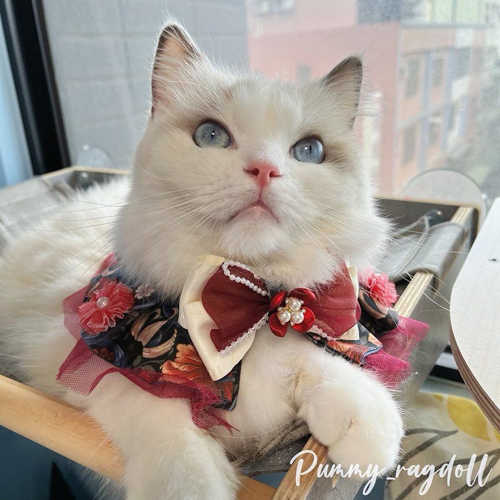
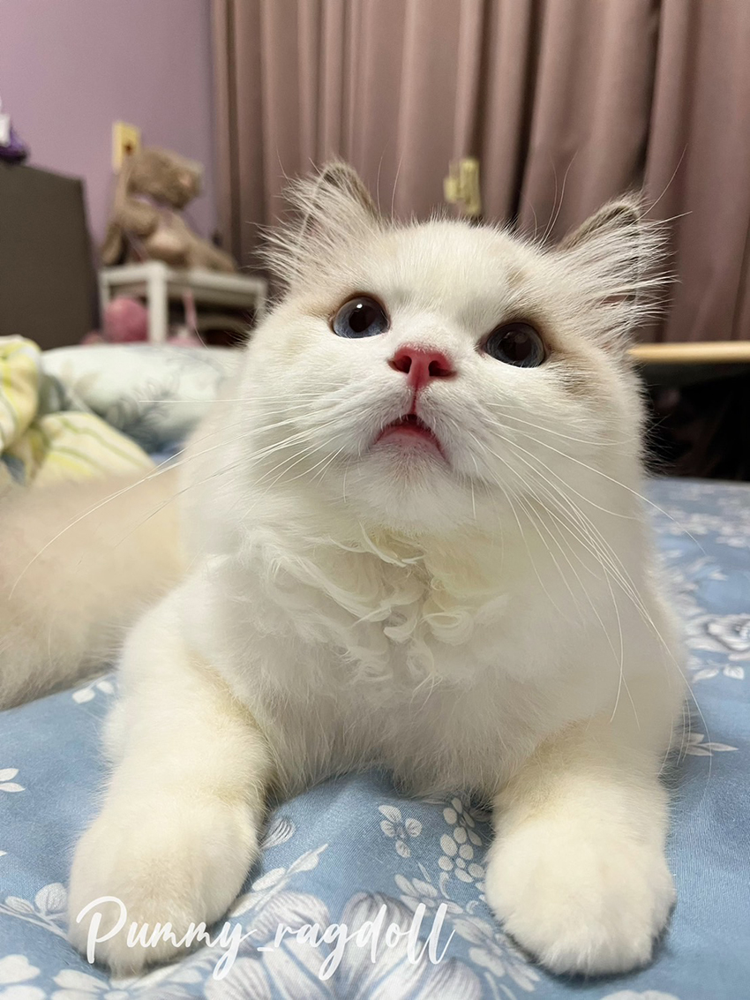

每天都是摸摸日
郭懷文│Server平鎮營運處＼製造課
我家有位「偽高冷」的小王子——兩歲的布偶貓Pummy。牠總是帶著鄙視眼神，但下一秒卻又會主動黏過來貼貼討摸，反差萌到讓人招架不住。
|  |
Pummy 貓生最大的樂趣，就是吃罐罐跟肉泥。只要聽到我們甩袋的唰唰聲，不管牠剛才是在窗邊觀察路人，還是窩在吊床上發呆，都會立刻衝過來，尾巴高高豎起，眼神閃爍著「快給我！」的光芒。
別看牠體態嬌小，活動力卻非常旺盛，牠喜歡在家裡巡邏，每個地方都要蹲點，有時半夜還會自己追著玩具跟Pummy麻麻自己做的毛線繩狂奔，彷彿正在上演「火影忍者喵」。
 |
Pummy幾乎不怕生，甚至很大方，只要有新朋友來，他會先躲在他的祕密通道，過陣子很快就會走到人家面前，優雅地躺下，把毛絨絨的肚皮毫不保留地展示出來——那是牠的「信任禮」。一旦開始摸，Pummy超級容易地舒服到閉眼、呼嚕作響，感覺就是在告訴你：「繼續，不准停」。
最讓人哭笑不得的，是那張天生高冷的臉，很多人第一次見牠都以為牠在瞪人，但熟了才知道，那只是牠的天然帥氣表情包。而我之所以分享牠的故事與照片，就是希望能幫這位小暖男「賺稿費換罐罐」。畢竟，以牠對罐罐的愛，應該會非常樂意成為萌寵界的「罐罐代言人」。
更多Pummy的日常，可以到 IG 搜尋pummy_ragdoll，相信你很快就會被這位高冷暖男收服！
|  |